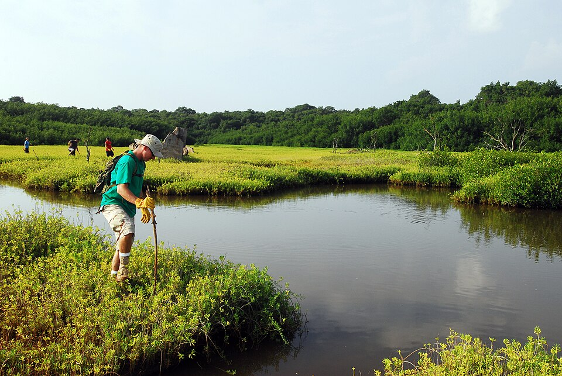

Pouhala Rail Station
Place: Pouhala Rail Station, Waipahu, Oʻahu
Type: Skyline rail station / transit hub
Namesake: Pouhala (“pandanus post or pillar”), a historic ʻili and fishpond within the ahupuaʻa of Waikele
Story it tells: How a modern rail station preserves the name of a historic Hawaiian landscape of hala, fishponds, wetlands, and agriculture, part of which survives today as Pouhala Marsh near Waipahu.

Pouhala Rail Station, also known as Waipahu Transit Center Station, stands near Farrington Highway in the heart of Waipahu. The elevated station opened on June 30, 2023, as part of Skyline's first operating segment and connects directly with one of West Oʻahu's busiest bus hubs. Its name comes from an older landscape that survives just beyond the station.
Pouhala means “pandanus post or pillar,” combining pou, meaning post or pillar, with hala, the Hawaiian pandanus. Pouhala was the name of an ʻili within the larger ahupuaʻa of Waikele and was also the name of an important fishpond and wetland along the West Loch of Puʻuloa, or Pearl Harbor.
Before Western contact, the vicinity of Pouhala Rail Station was an exceptionally productive landscape, primarily due to an abundance of fresh water. Waikele Stream carried freshwater toward Puʻuloa, while numerous springs emerged across the lowlands. Loʻi kalo, fishponds, wetlands, and brackish waterways supported a substantial Hawaiian population.
Hala also thrived in the wet coastal environment around Pouhala. The tree tolerates sandy and brackish conditions, while its extensive root system stabilizes shorelines. For Native Hawaiians, hala was an enormously useful plant. Its leaves could be woven into mats, baskets, and sails, while its wood, roots, fruit, and flowers had additional practical and cultural uses. The name Pouhala preserves the plant that was once a conspicuous part of this environment.
During the nineteenth century, the water-intensive landscape began to change. Population decline, introduced livestock, changing land ownership, and plantation agriculture disrupted the area. The Great Māhele further transformed patterns of landholding, with leasing of land driving more significant infrastructure investments.
By the end of the century, sugar had become the dominant force and in many regards dictated life in Waipahu. The Oahu Sugar Company began operations in 1897 and developed thousands of acres surrounding the community. Much of its plantation land was leased from large estates, including Bishop Estate, while enormous quantities of groundwater were pumped and redirected to irrigate cane. Fields, plantation camps, roads, irrigation works, and rail lines increasingly replaced the older agricultural landscape.
The Oahu Railway & Land Company also passed through Waipahu, carrying passengers and freight along the Pearl Harbor shoreline. Plantation railroads connected surrounding cane fields with the Waipahu Sugar Mill, creating a transportation corridor that Skyline generally follows today.
During World War II, the nearby sugar mill and transportation network became increasingly militarized after the attack of December 7, 1941. Rail lines became strategically important for moving military personnel, equipment, and supplies around Oʻahu.
After the war, Waipahu increasingly transformed from a plantation town into a suburban community. Housing, shopping centers, roads, and other development spread across former agricultural lands. Oahu Sugar Company ceased operations in 1995, ending nearly a century of large-scale sugar cultivation around Waipahu.
Throughout all this shiftin in the landscape, one piece of the older Pouhala landscape survived. Immediately makai of the modern rail corridor lies Pouhala Marsh, a remnant of the wetlands and fishpond environment that once extended across this portion of the West Loch shoreline.
As traditional fishpond management disappeared and the surrounding area urbanized, the wetland became choked with invasive vegetation and accumulated trash and other debris. Portions were filled, and the marsh was at one point considered to be a landfill in the 1970s. Recognition of its ecological importance and the proteting of local wildlife biologists and conservationists eventually changed its future.
Restoration efforts removed invasive mangrove, cleared debris, and reopened portions of the wetland. Today, roughly 70 acres are protected as Pouhala Marsh Wildlife Sanctuary, providing habitat for some of Hawaiʻi's endangered native waterbirds, including aeʻo, or Hawaiian stilts; ʻalae ʻula, or Hawaiian gallinules; and ʻalae keʻokeʻo, or Hawaiian coots.
When Honolulu's rail stations were given Hawaiian names, the Hawaiian Station Naming Working Group selected Pouhala for the station serving Waipahu Transit Center. The station returned an older name associated with the land, fishpond, wetland, and hala that preceded the plantation town around it.
Pouhala survives both as a name and as a place. The modern rail station carries the name above Waipahu while the marsh below preserves a fragment of the wetland landscape from which that name emerged.